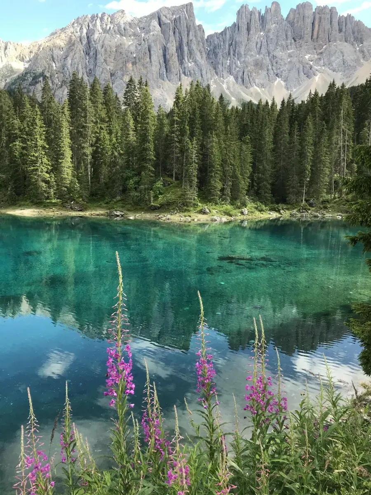

Heat
Heat & coats
- A dense or double coat traps heat; heat load matters more than air temperature.
- Start before 10am on warm days and turn back if panting stays heavy at rest.
- Favour shaded, lakeside and forested routes when it is warm.
The things that cause trouble on alpine trails are rarely the elevation. They are paws, heat, pace, and knowing when to turn back.
Call mountain rescue early rather than late. Know your dog's weight and any medication before you need to say them out loud, and know your nearest lift-assisted exit.
The full articles behind the cards above.
What is safe to pass, what to prevent your dog eating, and when to call a vet.
13-plant field guide · editorial review draft
Paw protection on rock and screeWhen boots help, when they hurt, and how to check pads on trail.
8 min read Reading heat stress early
Reading heat stress earlyThe signs that come before panting, and what to do in the first five minutes.
6 min read Livestock, guardian dogs and gates
Livestock, guardian dogs and gatesHow to cross grazed pasture without a confrontation.
7 min read Cable cars and lifts with a dog
Cable cars and lifts with a dogMuzzle rules, tickets and the last lift down.
5 min read Turning back: the honest checklist
Turning back: the honest checklistFive questions to ask at the halfway point.
4 min read Shoulder season at altitude
Shoulder season at altitudeIce on north faces while the valley is green.
6 min readThis guide is general information, not veterinary advice. If your dog shows signs of heat stress, injury or exhaustion on trail, get them to shade and water first, and to a vet if the symptoms do not resolve quickly.